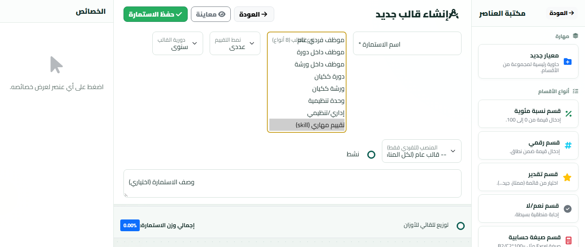
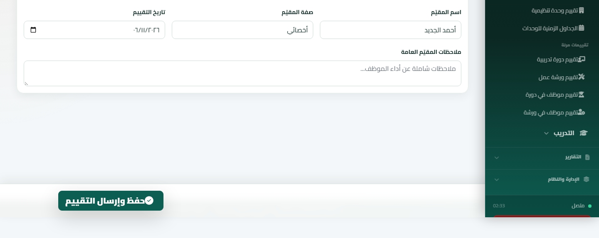
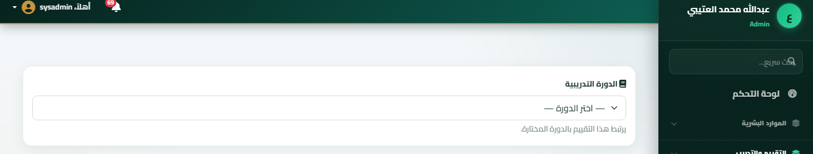
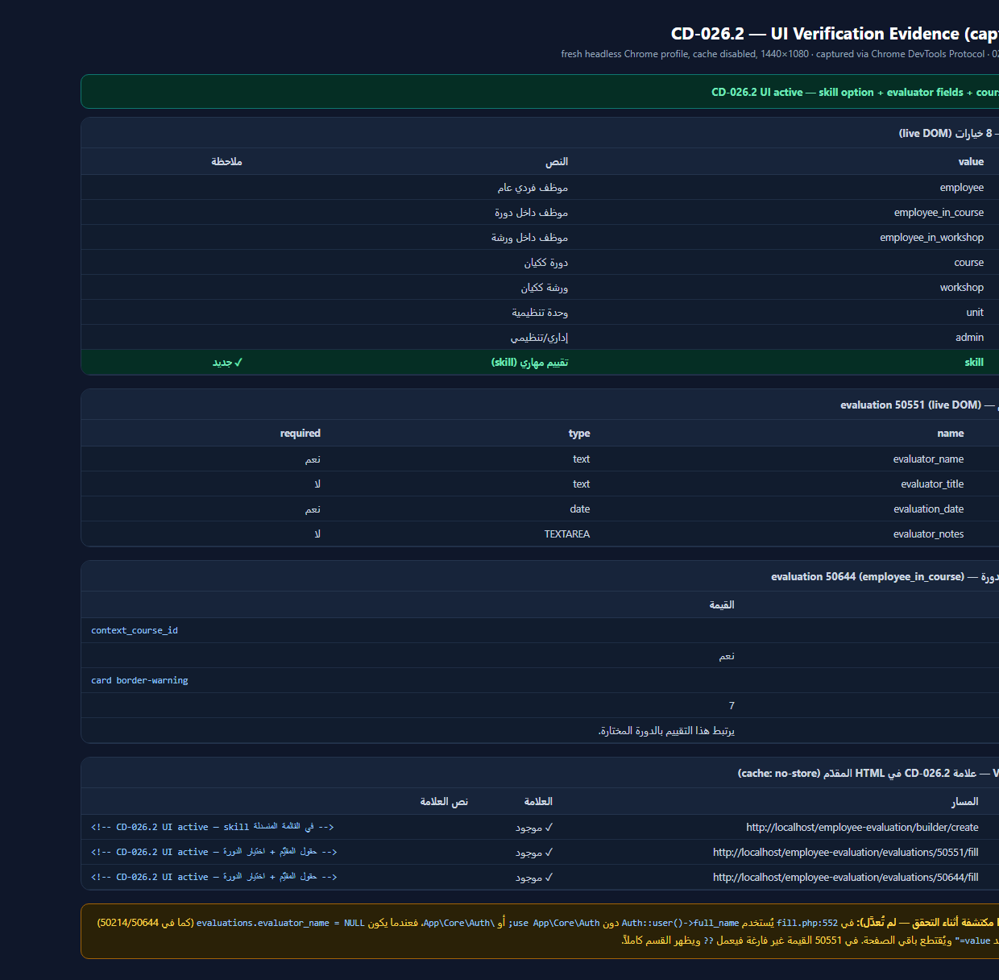

target_type موسّعة (size=8) لعرض الخيارات الثمانية كاملة بدل نافذة OS المنبثقة التي لا تُلتقط في المتصفح الآلي. الخيار الثامن skill محدد.

draft بقالب employee_in_course (template 21) أُنشئ من الواجهة. بطاقة card border-warning أعلى الاستمارة مع select إلزامي للدورة.
CD-026.2 UI active في HTML المقدّم (cache: no-store)، والخيارات الثمانية، وحقول المقيّم، وخصائص حقل الدورة.
app/Views/evaluations/fill.php:552 يُستخدم Auth::user()->full_name بدون use App\Core\Auth;.
عندما يكون evaluations.evaluator_name = NULL (كل تقييم جديد يُنشأ من مسار flexible/.../employee-in-course) يرمي PHP:
Uncaught Error: Class "Auth" not found، فيُقتطع المخرج عند value=" ولا تُعرض بطاقة المقيّم ولا زر الحفظ.
التقييم 50551 يعمل لأن قيمته غير فارغة فيتخطى ?? الطرف الأيمن.
الدليل: storage/logs/php-error.log بتاريخ 08-Nov-2026 02:31:52.
| البند | النتيجة |
|---|---|
| git log | d552130 — يعلو ee3c411 |
| علامة CD-026.2 في الملفات الثلاثة | ✓ builder / fill / bulk-create |
| View Source marker | ✓ builder + fill (50551 و50644) |
| خيار skill | ✓ الخيار 8 من 8 |
| بطاقة بيانات المقيّم | ✓ على 50551 (تحذير P1 للقيم NULL) |
| بطاقة اختيار الدورة | ✓ على 50644 (draft / employee_in_course) |
| الاختبارات | ✓ 148/148 PASS |
| بوابة الترميز | ✓ exit=0 (app 371 · tests 35) |